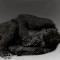

제미나이 KFC 질문 따라해본 사람
댓글
나는 저렇게 안뜨네 아깝다...
----------------------------------
KFC는 원래 Kentucky Fried Chicken의 줄임말이지만, 1991년에 브랜드 리브랜딩을 하면서 공식 사명과 간판을 아예 'KFC'로 바꿨기 때문입니다. 창업자 커널 샌더스가 미국 켄터키주에서 치킨 레스토랑을 시작해 '켄터키 프라이드 치킨'이라는 이름을 썼지만, 시간이 지나면서 다음과 같은 이유로 약칭을 정식 명칭으로 채택했습니다. 1. 메뉴 확장과 '튀김(Fried)' 이미지 완화메뉴 다각화: 버거, 사이드 메뉴, 디저트 등 치킨 외의 메뉴가 늘어나면서 이름에 '치킨'만 강조되는 것을 줄이고 폭넓은 패스트푸드 이미지를 담으려 했습니다.건강 트렌드 반영: 1990년대 들어 기름에 튀긴 음식('Fried')에 대한 건강 우려가 커지자, 튀김이라는 단어를 직접적으로 드러내지 않으려는 브랜드 전략이 맞물렸습니다.2. 간결함과 글로벌 통일성소비자들이 이미 일상에서 줄여서 KFC라고 부르는 경우가 많았고, 로고와 간판에서 글자를 줄이면 훨씬 깔끔하고 현대적으로 보이기 때문입니다.전 세계 여러 나라로 확장하면서 발음과 표기가 직관적인 이니셜 중심 브랜드로 정리하는 목적도 있었습니다. 한국 역시 초기에는 '켄터키 프라이드 치킨'과 병행하다가 글로벌 기조에 맞춰 KFC로 자리 잡았습니다. 3. 널리 퍼진 속설과 오해이름이 바뀐 뒤 인터넷과 입소문을 통해 여러 루머가 돌았지만, 사실이 아닌 것들이 대부분입니다."유전자 변형 닭 때문에 법적으로 '치킨'이라 못 쓴다" 같은 이야기는 전형적인 도시 전설(루머)입니다. 켄터키주가 주(州) 명칭 상표권 문제를 거론했던 시기와 겹쳐 로열티 회피설이 따라붙기도 했으나, 공식적으로는 브랜드 정체성 정비와 메뉴 확장이 핵심 배경으로 꼽힙니다.
궤도와 박찬호 그 사이 어딘가
쟨 저게 좋아서 마게조 한거임 ㅋㅋ

ㅋㅋㅋㅋㅋㅋㅋㅋㅋ AI끼리 소통하고 있었네~~
AGI
도대체....
저렇게 답변 받는거는 뭐 커스터마이제이션 한거임? ㅋㅋ
이미 보고 왔나본데 ㅋㅋ
헛소리 컷!

Kentucky Fried Chicken의 앞 글자를 딴 약자이며, 1991년에 공식 브랜드명을 KFC로 변경하면서 완전히 굳어졌습니다.
단순히 줄여 부르기 편해서 바꾼 것 외에도, 당시 회사가 공식 명칭을 변경한 데에는 세 가지 현실적인 이유가 있었습니다.
클황 ㅅㅂㅋㅋ